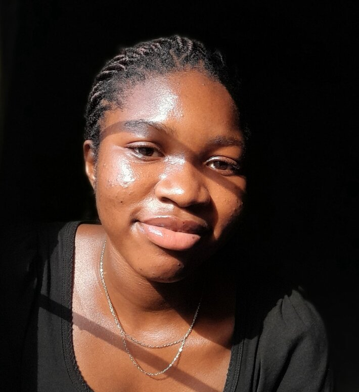

Gift Ndoma | WDD 130
Hi, I'm Gift Ndoma, a college student with a deep passion for web development and software engineering. I’m driven by a curiosity to understand the intricacies of technology and a desire to create meaningful digital experiences that combine creativity with functionality. Whether it’s designing intuitive user interfaces or writing efficient code, I enjoy turning ideas into practical solutions that make an impact. My journey in tech has been fueled by a love for continuous learning and personal growth. I am constantly seeking opportunities to improve my skills, tackle new challenges, and stay updated with the latest industry trends. I believe that every project is a chance to learn something new, and I approach each one with enthusiasm and a commitment to excellence. Beyond my technical pursuits, I enjoy exploring creative hobbies that inspire me in unique ways. I’m learning to play the piano, an endeavor that nurtures my patience and creativity, and I find joy in crocheting, where I bring intricate patterns to life. These activities not only provide balance but also remind me of the beauty in building something from scratch. I’m excited to continue expanding my knowledge, contributing to meaningful projects, and connecting with like-minded individuals who share a passion for innovation and creativity.